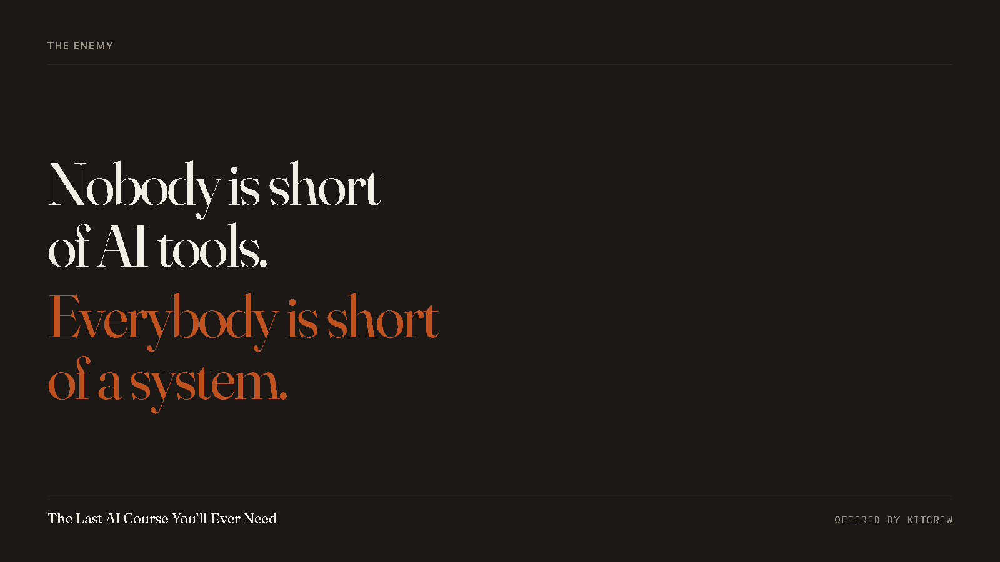

You Asked the AI to Do It. Then You Did It Yourself.
Forty minutes saved on the draft, ninety minutes spent on the fix. Nobody counts the second number. Here's the loop, and here's what ends it.

Here is the loop I want to name, because almost nobody names it and almost everybody is in it.
You need a post. You open a chat window. You type out who you are, what you sell, who you sell it to, what you don't want it to sound like. Four or five paragraphs of context, because it doesn't know any of that.
Back comes something. It's fine. It's about eighty percent there.
So you fix the twenty percent. You cut the first sentence, because it always writes an opening sentence that says nothing. You put your own words back into the middle. You delete the three-item list it made out of a two-item thought. You rewrite the ending, which was a summary of the thing the reader just read.
Then you post it, and you close the tab.
Tomorrow you will type those same five paragraphs of context into a new window, and get back the same eighty percent, and fix the same twenty percent by hand.
That is the behaviour. Not "I'm not good at prompting." Not "I need to learn AI." The behaviour is: you asked it to do the job, and then you did the job, and the second half is invisible because it feels like ordinary work.
Do the arithmetic on your own week if you want to be annoyed. Not my numbers, yours: minutes typing the context, plus minutes rewriting the output, times however many times you did it. Then ask what you'd have paid a person to do that same job once, properly, and never ask you again.
Why better prompts don't get you out
I sold the fix-your-prompts idea myself for a while. It's real and it works and it is nowhere near enough, and here's the reason it isn't.
A perfect prompt written into a system with no memory gets you a perfect one-off. Tomorrow the window is empty again. Nothing you learned about how to ask stayed anywhere, because there was nowhere for it to stay. You didn't build anything. You had a good afternoon, twice a week, for a year.
And there's a second reason, which is the one people don't say out loud. It will tell you it finished things it didn't finish. Not out of malice. It produces the shape of a completion report, because a completion report is what the moment calls for. If you have ever been handed a confident description of a file that does not exist, you've already met this.
We ran into that hard enough, often enough, that it became the sentence the whole operation turns on: a reply is a claim, not a result. Once you accept that, you stop trying to get better answers and you start building the thing that checks.
What actually ends the loop
Three things, and none of them is a prompt.
Something it reads before it answers, so you never type your context again. A record it isn't allowed to quietly rewrite, so what you decided in March is still what you decided in March. And a check it has to pass before "done" counts, so you can hand work over and go do something else.
That's a system, not a trick, and it's why my company has 27 AI employees with real job descriptions instead of one very patient chat window. I'm still one human. Every one of those seats owns exactly one thing, has a written list of what it may never touch, and hands a decision up to me rather than guessing at it.
I wrote all of it down — fifteen chapters, built inside a real company that has run on AI for hundreds of sessions, with the misses left in where we got it wrong. Chapter one is free, and it's the chapter about the three levers, which is the part you can use this afternoon without buying anything.
If you want to see it working on real accounts before you read a word about it, that happens in the open here: the Build Your AI OS room →.
— Chris Corey, Co-Founder, KitFire AI